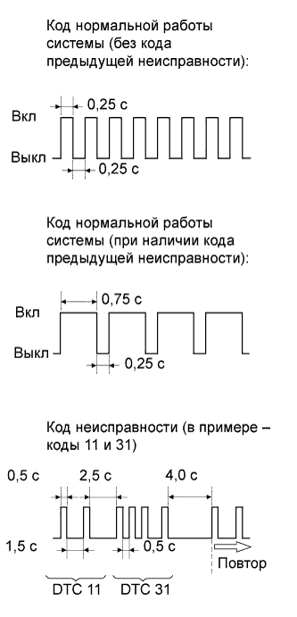

СИСТЕМА ПОДУШЕК БЕЗОПАСНОСТИ > ПРОВЕРКА / СБРОС КОДОВ DTC |
| ПРОВЕРЬТЕ DTC (с помощью диагностического жгута проводов SST) |
Проверьте коды DTC (коды текущей неисправности).
Включите зажигание и подождите приблизительно 60 секунд.
С помощью SST соедините контакты 13 (TC) и 4 (CG) на DLC3.
Проверьте коды DTC (коды предыдущей неисправности).
С помощью SST соедините контакты 13 (TC) и 4 (CG) на DLC3.
Включите зажигание и подождите приблизительно 60 секунд.
|  |
Считайте коды DTC.
Определите характер мигания DTC. В качестве примера, на рисунке приводятся схемы кода нормальной работы системы и кодов 11 и 31.
| СБРОСЬТЕ DTC (с помощью диагностического жгута проводов SST) |
При повороте замка зажигания в положение OFF (ВЫКЛ) коды DTC сбрасываются.
С помощью SST соедините контакты 13 (TC) и 4 (CG) разъема DLC3, а затем включите зажигание.
Через 3-10 секунд после вывода кодов DTC отсоедините контакт TC от DLC3 и убедитесь, что через 3 секунды включается контрольная лампа аварийного состояния SRS.
Через 2-4 секунды после включения контрольной лампы аварийного состояния SRS соедините контакты 13 (TC) и 4 (CG) разъема DLC3.
Убедитесь, что через 2-4 секунды после соединения контактов 13 (TC) и 4 (CG) разъема DLC3 контрольная лампа аварийного состояния SRS выключается. Затем через 2-4 секунды после выключения контрольной лампы аварийного состояния SRS отсоедините контакт 13 (TC).
Убедитесь, что через 2-4 секунды после отсоединения контакта 13 (TC) контрольная лампа аварийного состояния SRS снова включается. Затем через 2-4 секунды после включения контрольной лампы аварийного состояния SRS снова соедините контакты 13 (TC) и 4 (CG).
Убедитесь, что через 2-4 секунды после соединения контактов 13 (TC) и 4 (CG) разъема DLC3 контрольная лампа аварийного состояния SRS выключается. Также убедитесь, что через 1 секунду после выключения контрольной лампы аварийного состояния SRS появляется код нормальной работы.
Если коды неисправностей DTC не сброшены, повторяйте рассмотренную выше процедуру до сброса всех кодов.
| ПРОВЕРЬТЕ DTC (с помощью портативного диагностического прибора) |
Подсоедините портативный диагностический прибор к DLC3.
Установите замок зажигания в положение ON (ВКЛ).
Включите портативный диагностический прибор.
Войдите в следующие меню: Body / SRS Airbag / Trouble Codes.
| СБРОСЬТЕ DTC (с помощью портативного диагностического прибора) |
Подсоедините портативный диагностический прибор к DLC3.
Установите замок зажигания в положение ON (ВКЛ).
Включите портативный диагностический прибор.
Войдите в следующие меню: Body / SRS Airbag / Trouble Codes.
Сбросьте коды DTC.